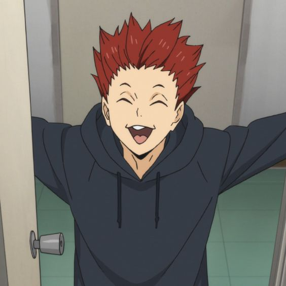

Haikyu!!
Personal appreciation

My favourite anime is by far Haikyu!!. The message of teamwork really stands out along with other important values, such as learning to let the others go first, failure isn't scary, etc. Additionally, it's very fulfilling and thrilling to watch. I held my breath for many of their matches and fell in love over and over with many characters. When they lose, you feel sad with them; and when they win, respect and joy wash over you. I am currently reading the manga serie of this anime. It's just as good as the TV adaptation, and it's interesting how I know the outcome, but still feel stress when reading. The anime also doesn't cover the whole series, so this will allow me to complete my experience of Haikyu. I'd like to finish by adding that I have so many favs, but on top there's Tendou :), Nishinoya, Oikawa, Bokuto and more.
They're all part of different high school teams, but these remarkable athletes all have something about them that make you love all of them even if you have a preference for a certain team.
But since I still have a lot of love for most teams, I decided to list them here, without any specific order, since I don't follow the teams that closely. Special mention to Karasuno and Nekoma though, I feel like they are more developped as a whole team since for other teams the author mainly focuses on a couple of characters.
Haikyu Teams
- Karasuno
- Nekoma
- Aoba Johsai (Seijoh)
- Fukurodani
- Shiratorizawa
- Dateko (Date Tech)
- Nohebi
- Inarizaki
- Itachiyama
- Kamomedai